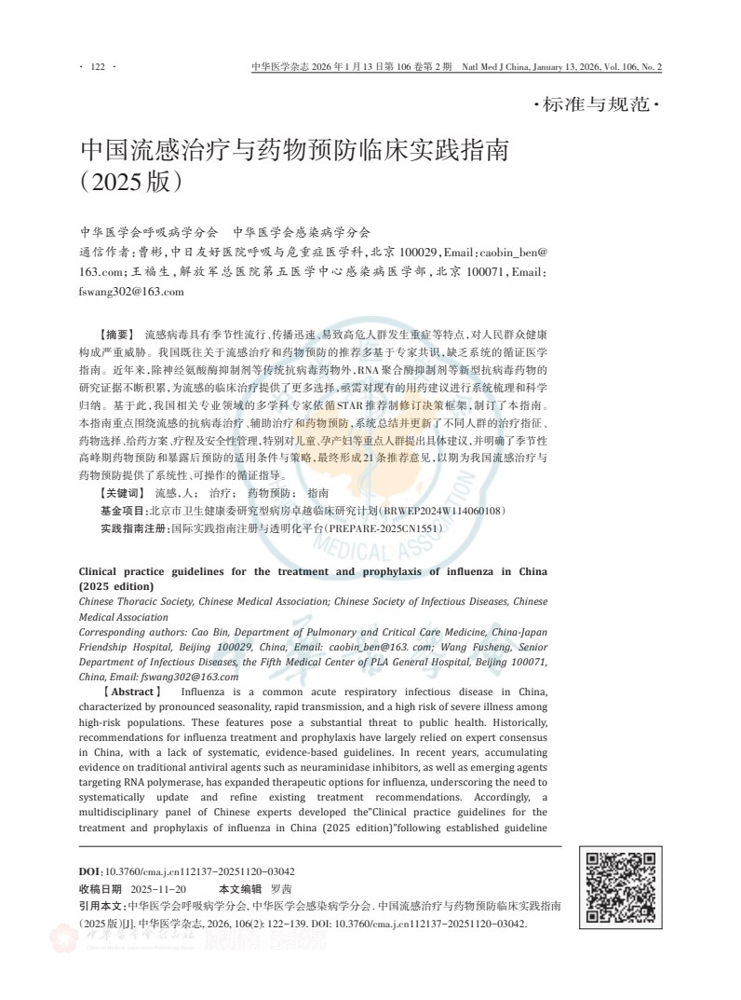
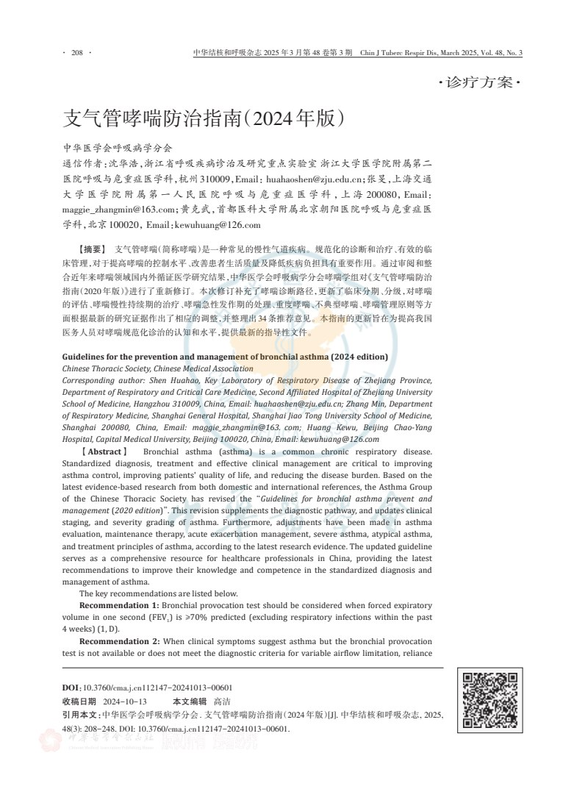
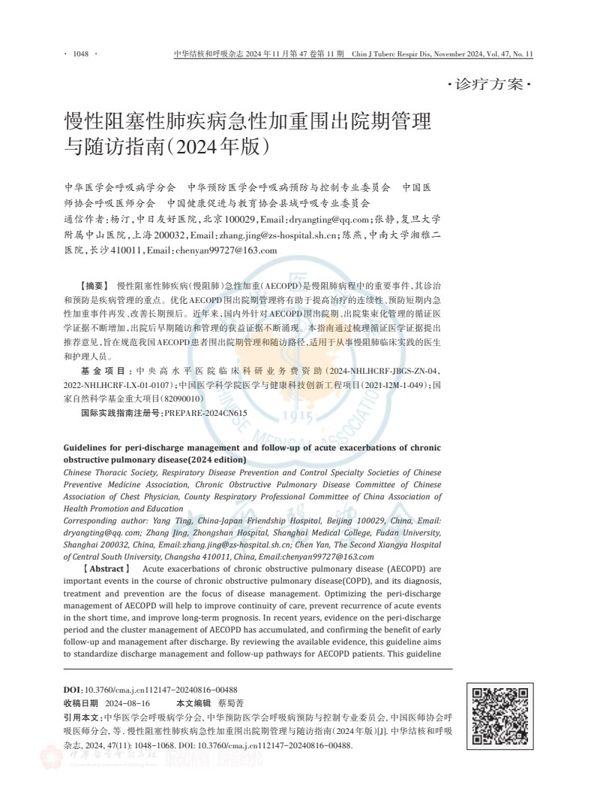
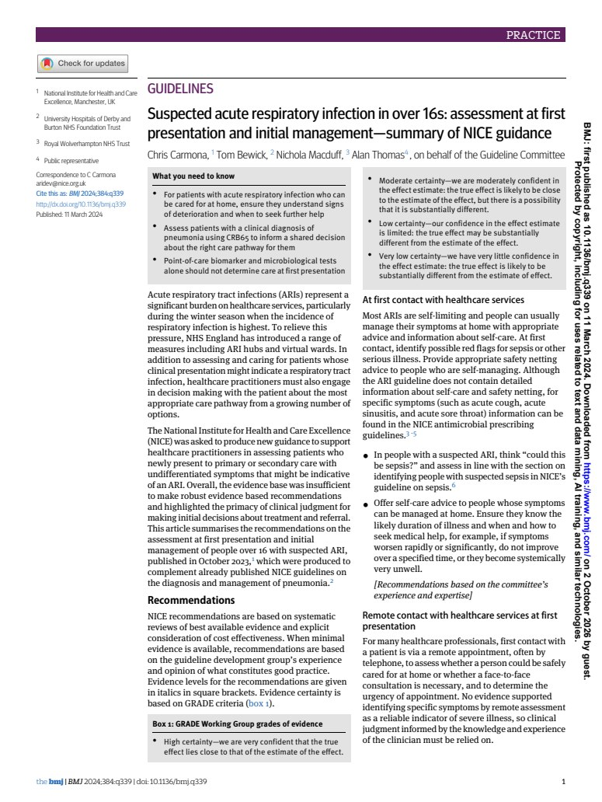
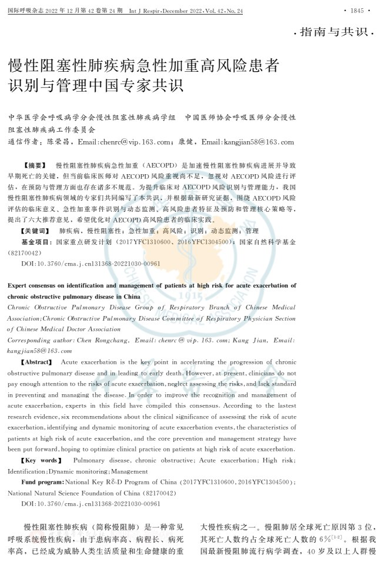
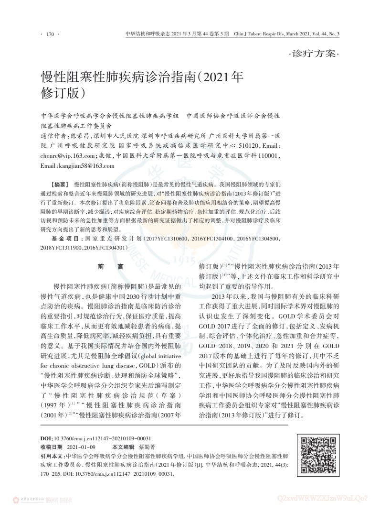
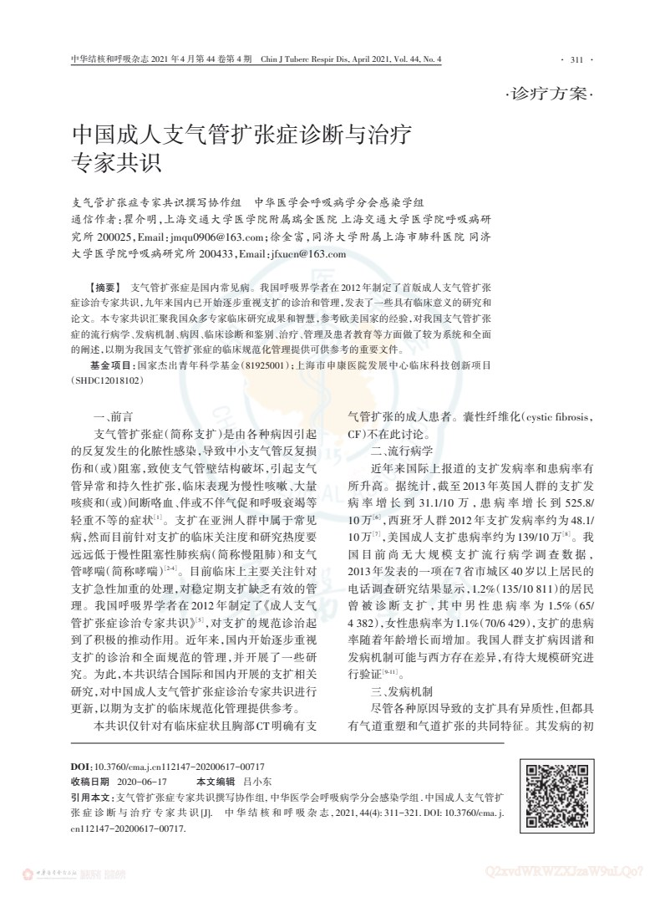
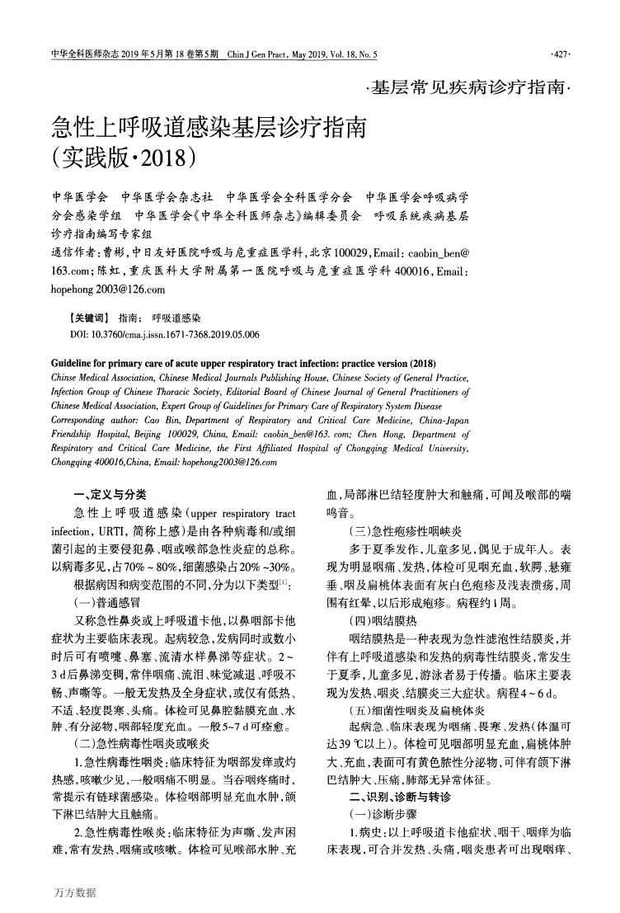
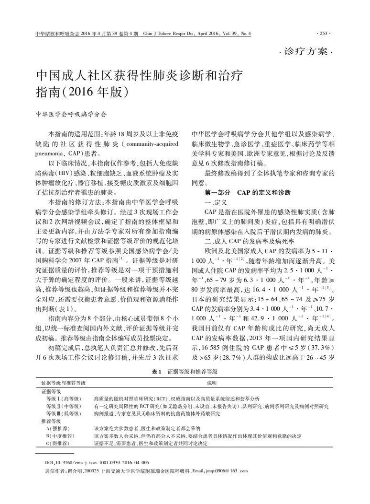

PDF中国流感治疗与药物预防临床实践指南（2025版）
2025版 · 2026年刊出
中华医学杂志
Learning Resources
常见呼吸疾病的指南、专家共识与学习资料。点击卡片阅读 PDF，也可下载保存。
共 9 份资料
按发表年份排列
PDF2025版 · 2026年刊出
中华医学杂志

PDF2024年版 · 2025年刊出
中华结核和呼吸杂志

PDF2024年版
中华结核和呼吸杂志

PDF2024年刊出 · 英文
BMJ

PDF2022年刊出
国际呼吸杂志

PDF2021年修订版
中华结核和呼吸杂志

PDF2021年刊出
中华结核和呼吸杂志

PDF实践版·2018 · 2019年刊出
中华全科医师杂志

PDF2016年版
中华结核和呼吸杂志
请尝试其他关键词，或清除分类条件。